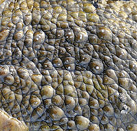

La première chose physique qui va nous permettre de différencier le crapaud de la grenouille est la peau. La grenouille a une peau lisse, fine et humide voir visqueuse tandis que celle du crapaud est plus sèche, granuleuse mais cependant très douce.Il vous sera beaucoup plus difficile d’attraper une grenouille qui vous glissera des mains qu’un crapaud. Cette différence se justifie par leur environnement naturel.
Même s’ils font tous les deux partie de la même classification, leur habitat est pourtant bien différent.Les crapauds sont des amphibiens plutôt terrestres. Vous les trouverez facilement en forêt, dans les praires ou dans votre jardin. Les crapauds se rapprochent de l’eau au moment de l’accouplement et de la ponte des oeufs.Les grenouilles quant à elles sont aquatiques. Elles vivent près des coins d’eau. Ce sont les grenouilles que nous associons aux nénuphars. Les grenouilles peuvent également rester de longs moments sous l’eau.
La morphologie des pattes arrières peut être un élément de distinction entre les deux espèces. En effet, une grenouille aura les pattes plus longues et plus musclées qu’un crapaud. Les appendices de la grenouilles sont repliées en Z et lui permettent une longue détente pour effectuer de grands sauts et de beaux plongeons. Du fait que la grenouille vive en milieu aquatique, ses pattes sont pourvues de petites membranes lui formant des palmes pour mieux se déplacer dans l’eau.Le crapaud a les pattes beaucoup plus courtes l’obligeant à avancer par petits sauts. Le crapaud est lui dépourvu de membranes puisqu’il n’utilise les coins d’eau que pour se reproduire.
Grenouilles et crapauds se distinguent également par la façon de se reproduire. Toutes les deux pondent des oeufs dans l’eau mais leur façon de faire diverge.La grenouille pond des œufs en amas généralement à la surface de l’eau. La femelle crapaud pond ses œufs en forme de filaments. Chaque filament comporte plusieurs centaines d’œufs. On les retrouve le plus souvent accrochés à de la végétation au fond de l’eau.
Rêver d’embrasser un crapaud pour le transformer en prince pourrait s’avérer dangereux. En effet, ce petit amphibien dispose de petites glandes venimeuses derrière les yeux. Ces glandes sécrètent une substance laiteuse protégeant le crapaud de ses prédateurs. Ce venin toxique s’attaque directement au système nerveux de l’agresseur le conduisant à une paralysie ou à la mort dans le pire des cas. Ce poison est aussi dangereux pour l’homme que pour un animal.Certaines espèces de crapauds que l’on trouve dans les tropiques sont très dangereuses, voire mortelles. On les reconnaît à leur couleur particulière souvent rouge, jaune ou orange.Les grenouilles quant à elles sont inoffensives.